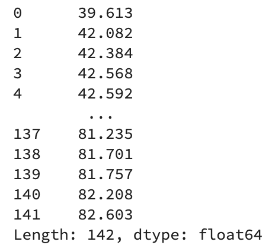
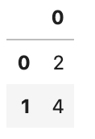

Central Tendency (R,Python)
Course Overview
Red means that the page does not exist yet
Orange means that the page is started
Central tendancy describes typical values of a variable, such as it’s mean and median.
Mean vs. Median vs. Mode
The mean is often called the “average” informally, but is actually a specific type of “average”. The mean is the average you get when add together a group of numbers, and then divide by the number of items you combined. For example, to calculate the mean life expectancy of countries in 2007, we’ll use gapminder data
# install (if required) and load the gapminder data
if(!require(gapminder)){install.packages("gapminder")}Loading required package: gapminderlibrary(gapminder)
# create a new data frame that only focuses on data from 2007
gapminder_2007 <- subset(
gapminder, # the data set
year == 2007
)
# a reminder of the data frame
rmarkdown::paged_table(head(gapminder_2007)) # total of all years
sum_life_expectancy = sum(gapminder_2007$lifeExp)
# count the people
n_life_expectancy = length(gapminder_2007$lifeExp)
mean_life_expectancy = sum_life_expectancy/n_life_expectancy
mean_life_expectancy[1] 67.00742# load the gapminder module and import the gapminder dataset
from gapminder import gapminder
# import the tabulate
from tabulate import tabulate
# create a new data frame that only focuses on data from 2007
gapminder_2007 = gapminder.loc[gapminder['year'] == 2007]
#display table
print(tabulate(gapminder_2007[:6], headers=gapminder_2007.head() , tablefmt="fancy_grid",showindex=False ))
# total of all years
sum_life_expectancy = gapminder_2007['lifeExp'].sum()
# count the people
n_life_expectancy = gapminder_2007['lifeExp'].count()
# calculate mean life expectancy
mean_life_expectancy = sum_life_expectancy/n_life_expectancy
mean_life_expectancy
67.00742253521126For those of you who like to double check these things (which is a good instinct), lets see what number you get if you use the r function for mean:
mean(gapminder_2007$lifeExp)[1] 67.00742gapminder_2007['lifeExp'].mean()67.00742253521126Whew - it’s the same as the manual calculation above.
Now median is less known than mean, but median is the value in the middle once you order all your data. It’s well explained in the first paragraph on wikipedia: https://en.wikipedia.org/wiki/Median, so I would suggest looking there. As you can see below, the mean and median are not always the same (in fact, they are usually at least slightly different):
mean(gapminder_2007$lifeExp)[1] 67.00742median(gapminder_2007$lifeExp)[1] 71.9355gapminder_2007['lifeExp'].mean()
gapminder_2007['lifeExp'].median()67.00742253521126
71.93549999999999Finally, the mode is simply the most frequent number in your data. So lets now see if the mode is closer to the mean or median:
# Solution for calculating mode found at https://stackoverflow.com/a/2547918 as there doesn't seem to be a native function:
library(modeest)
mlv(gapminder_2007$lifeExp, method = "mfv") [1] 39.613 42.082 42.384 42.568 42.592 42.731 43.487 43.828 44.741 45.678
[11] 46.242 46.388 46.462 46.859 48.159 48.303 48.328 49.339 49.580 50.430
[21] 50.651 50.728 51.542 51.579 52.295 52.517 52.906 52.947 54.110 54.467
[31] 54.791 55.322 56.007 56.728 56.735 56.867 58.040 58.420 58.556 59.443
[41] 59.448 59.545 59.723 60.022 60.916 62.069 62.698 63.062 63.785 64.062
[51] 64.164 64.698 65.152 65.483 65.528 65.554 66.803 67.297 69.819 70.198
[61] 70.259 70.616 70.650 70.964 71.164 71.338 71.421 71.688 71.752 71.777
[71] 71.878 71.993 72.235 72.301 72.390 72.396 72.476 72.535 72.567 72.777
[81] 72.801 72.889 72.899 72.961 73.005 73.338 73.422 73.747 73.923 73.952
[91] 74.002 74.143 74.241 74.249 74.543 74.663 74.852 74.994 75.320 75.537
[101] 75.563 75.635 75.640 75.748 76.195 76.384 76.423 76.442 76.486 77.588
[111] 77.926 78.098 78.242 78.273 78.332 78.400 78.553 78.623 78.746 78.782
[121] 78.885 79.313 79.406 79.425 79.441 79.483 79.762 79.829 79.972 80.196
[131] 80.204 80.546 80.653 80.657 80.745 80.884 80.941 81.235 81.701 81.757
[141] 82.208 82.603gapminder_2007['lifeExp'].mode()
The mode for this data was actually every value perhaps because each value was unique! Lets double check that:
length(gapminder_2007$lifeExp)[1] 142length(unique(gapminder_2007$lifeExp))[1] 142# count number of elements in the dataset
gapminder_2007['lifeExp'].count()
# create a vector with the unique values presented in the dataset
num_values = gapminder_2007['lifeExp'].unique()
# get the lenght of the vector
len(num_values)142
142The length of the whole vector and the unique values of the vector is the same, confirming that there’s no repetition in this data (and so no number is the mode). Lets make up some data so that we can look at what the mode is:
mode_example_vector <- c(1,2,2,3,4,4)
mlv(mode_example_vector, method = "mfv")[1] 2 4import pandas as pd
# create a vector
mode_example_vector = [1,2,2,3,4,4]
# convert the vector to a pandas dataframe
mode_example_vector = pd.DataFrame(mode_example_vector)
# get the mode
mode_example_vector.mode()
In the above data, there are 2 modes, as the numbers 2 and 4 occur the most.
Question 1
Which of the following is most influenced by outliers?